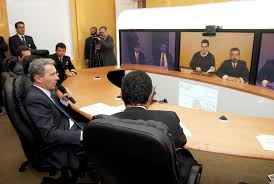

Impacts Collaborative telepresence has on government |
|||||
Cisco explored how agencies can leverage technology to set up the right infrastructure for an increasingly mobile workforce. Fitting to the topic of this session, Lance Ford, Educational Technology Advocate, Cisco, held the session via telepresence.Telepresence is a way to innovate and save. Through telepresence government agencies can train employees from any location, and easily connect with anyone one the planet. Now more than ever, government agencies are being called on to reduce expenses, operate more efficiently and collaborate more effectively. Cisco TelePresence enables government agencies to address these challenges head on, through high definition video communications. From the laptop to the immersive room based systems and everywhere in-between, telepresence technology can expedite decision making, connect a geographically dispersed workforce and break down the barriers for inter and intra agency communication.
Video conferencing and telepresence systems create virtual meeting experiences so realistic, participants feel as if they are in the same room, even when they are in agencies located miles apart. As a result, the need for government workers to travel for meetings is reduced, saving travel related costs and carbon dioxide emissions. State and local government agencies use video conferencing and telepresence solutions for a wide variety of applications, including collaboration among departments, video arraignments, and distance training.
|  | |